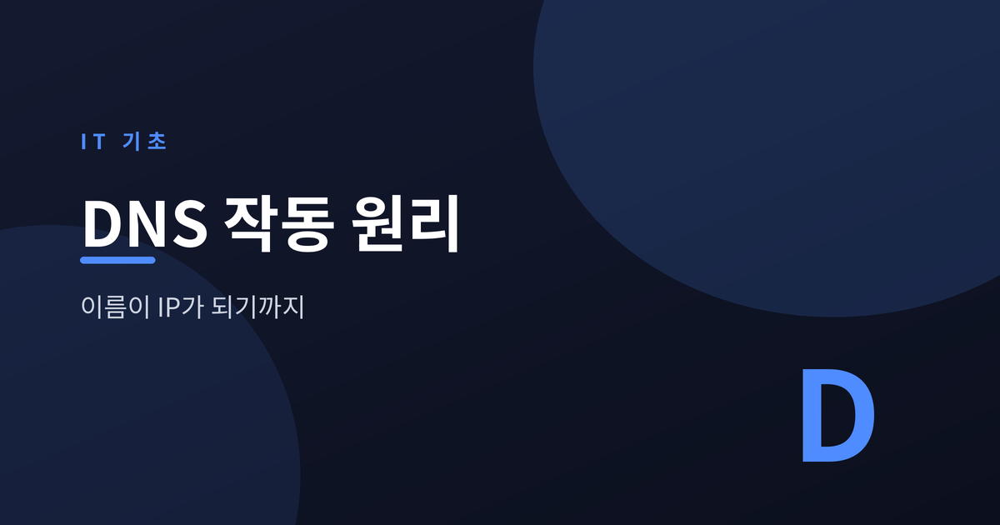
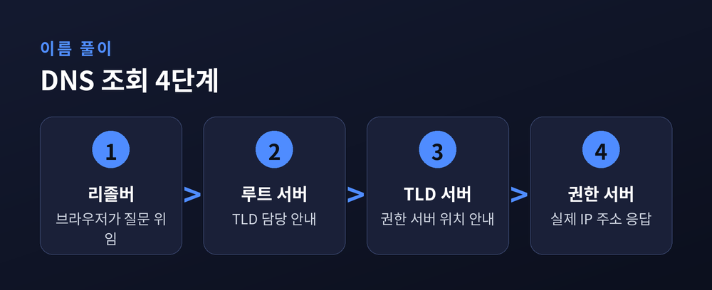
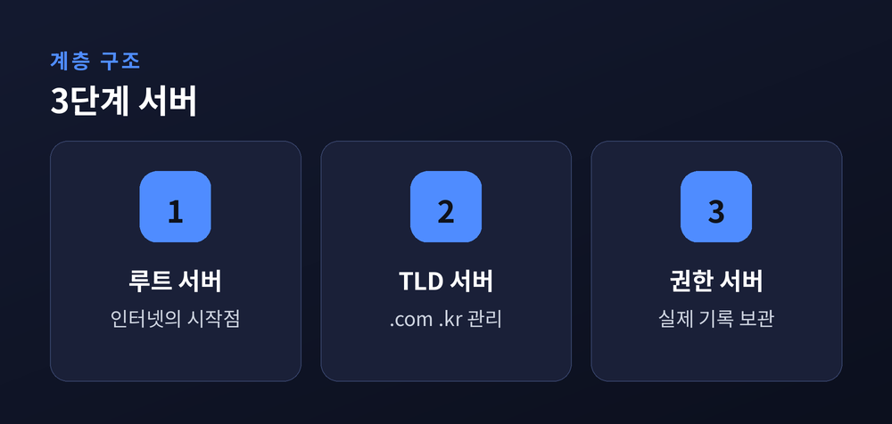
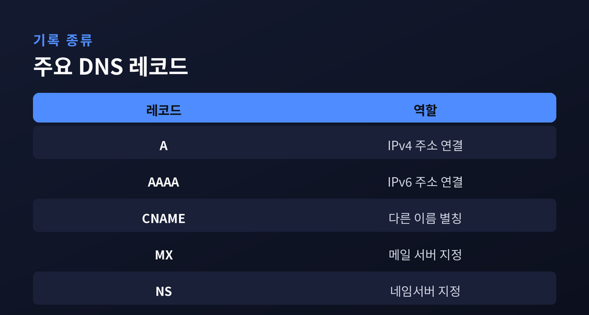

도메인 이름이 IP 주소로 바뀌는 과정

우리는 매일 웹사이트 주소를 입력합니다. 하지만 컴퓨터는 이름이 아니라 숫자로 서버를 찾습니다. 그 이름을 숫자로 바꿔 주는 체계가 DNS입니다.
사람은 example.com 같은 이름을 기억합니다. 반면 인터넷의 기계는 IP 주소라는 숫자로 서로를 찾습니다.
전화번호부를 떠올리면 쉽습니다. 이름을 알면 번호를 찾아 주는 안내 체계입니다. DNS는 인터넷의 전화번호부 역할을 합니다.
주소창에 이름을 넣으면 화면 뒤에서 이 변환이 일어납니다. 이 과정을 이름 풀이, 즉 DNS 조회라고 부릅니다.

이름 풀이는 계층 구조를 따라 위에서 아래로 내려갑니다.
첫째, 브라우저는 재귀 리졸버에 질문을 넘깁니다. 리졸버는 답을 찾아 오는 심부름꾼입니다.
둘째, 리졸버는 최상위의 루트 서버에 묻습니다. 루트 서버는 최종 답 대신 ".com 담당에게 가라"는 안내를 줍니다.
셋째, 리졸버는 .com을 관리하는 TLD 서버로 갑니다. TLD 서버는 그 도메인의 권한 서버 위치를 알려 줍니다.
넷째, 리졸버는 권한 네임서버에 도달합니다. 이 서버가 진짜 IP 주소를 가지고 있어, 마침내 답이 돌아옵니다.
리졸버가 여러 서버를 순차로 물어 최종 답을 완성하는 방식을 반복 질의라 부릅니다. 반면 브라우저가 리졸버에게 "알아서 다 찾아 달라"고 맡기는 첫 요청은 재귀 질의입니다.

세상의 모든 도메인을 한 서버가 담당하기란 불가능합니다. 그래서 DNS는 역할을 나눕니다.
루트 → TLD → 권한 네임서버 순으로 범위가 점점 좁아집니다.
루트 서버는 인터넷 전체의 시작점입니다. 종류는 13개이지만 실제로는 애니캐스트 기술로 전 세계에 600대 넘게 복제되어 있습니다.
TLD 서버는 .com, .org, .kr 같은 최상위 도메인 묶음을 관리합니다. 권한 네임서버는 특정 도메인의 실제 기록을 보관하며 최종 답을 냅니다.
역할을 나눈 덕에 방대한 인터넷이 안정적으로 굴러갑니다. 다만 단계가 여럿이라 한 번의 조회 경로는 그만큼 길어집니다.
매번 이 긴 여정을 반복하면 느립니다. 그래서 DNS는 결과를 잠시 저장하는데요, 이를 캐싱이라 합니다.
캐시는 여러 곳에 쌓입니다. 브라우저, 운영체제, 그리고 리졸버가 각자 답을 보관합니다. 다음 요청은 저장된 답으로 즉시 처리됩니다.
저장 기간은 TTL 값이 정합니다. TTL은 초 단위이며, 300초는 5분, 3600초는 1시간, 86400초는 하루를 뜻합니다.
TTL이 짧으면 변경이 빨리 퍼지지만 조회 부담이 늘어납니다. 길면 반대로 빠르지만 주소를 바꿔도 갱신이 더딥니다. 상황에 맞춰 값을 조절합니다.

권한 서버에는 여러 형태의 기록이 들어 있습니다. 대표적인 레코드는 다음과 같습니다.
| 레코드 | 역할 |
|---|---|
| A | 도메인을 IPv4 주소에 연결 |
| AAAA | 도메인을 IPv6 주소에 연결 |
| CNAME | 다른 도메인 이름으로 넘기는 별칭 |
| MX | 메일 수신 서버 지정 |
| NS | 담당 네임서버 지정 |
A와 AAAA는 이름을 실제 주소로 잇는 핵심입니다. CNAME은 별칭이라 만나면 다시 원래 이름의 주소를 찾아갑니다. MX는 이메일, NS는 담당 서버를 가리킵니다.
이름을 숫자로 바꾸는 일. 그 뒤에는 계층 서버와 캐싱이 촘촘히 맞물려 있습니다. 주소창에 이름을 넣는 순간, 보이지 않는 심부름이 세계를 한 바퀴 돕니다.
"DNS는 인터넷의 전화번호부다."
오늘 방문한 사이트 하나에도, 이 조용한 여정이 담겨 있습니다.